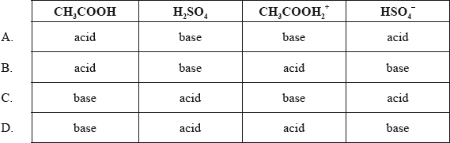
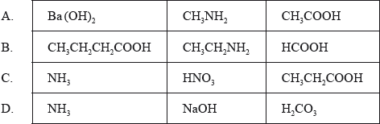

HL Paper 1
According to the Brønsted-Lowry theory, how does each species act in the equilibrium below?
\[{\text{C}}{{\text{H}}_3}{\text{COOH}} + {{\text{H}}_2}{\text{S}}{{\text{O}}_4} \rightleftharpoons {\text{C}}{{\text{H}}_3}{\text{COOH}}_2^ + + {\text{HSO}}_4^ - \]

Markscheme
D
Examiners report
II. The strong acid reacts with a metal oxide but the weak acid does not.
III. The strong acid has greater conductivity than the weak acid.
B. I and III only
C. II and III only
D. I, II and III
Markscheme
B
Examiners report
What is the pH of 1.0 × 10−3 mol dm−3 sodium hydroxide, NaOH(aq)?
Kw = 1.0 × 10−14
A. 3
B. 4
C. 10
D. 11
Markscheme
D
Examiners report
Which solutions have a pH less than 7?
I. \({\text{N}}{{\text{a}}_2}{\text{C}}{{\text{O}}_3}({\text{aq)}}\)
II. \({\text{[Fe(}}{{\text{H}}_2}{\text{O}}{{\text{)}}_6}{\text{]C}}{{\text{l}}_3}{\text{(aq)}}\)
III. \({{\text{(N}}{{\text{H}}_4}{\text{)}}_2}{\text{S}}{{\text{O}}_4}{\text{(aq)}}\)
A. I and II only
B. I and III only
C. II and III only
D. I, II and III
Markscheme
C
Examiners report
What is the correct expression for the ionic product constant of water, \({K_{\text{w}}}\)?
A. \({K_{\text{W}}} = \frac{{{\text{[}}{{\text{H}}^ + }{\text{]}}}}{{{\text{[O}}{{\text{H}}^ - }{\text{]}}}}\)
B. \({K_{\text{W}}}{\text{ = }}\frac{{{\text{[}}{{\text{H}}_2}{\text{O]}}}}{{{\text{[}}{{\text{H}}^ + }{\text{][O}}{{\text{H}}^ - }{\text{]}}}}\)
C. \({K_{\text{W}}} = {\text{[}}{{\text{H}}^ + }{\text{]}} + {\text{[O}}{{\text{H}}^ - }{\text{]}}\)
D. \({K_{\text{W}}} = {\text{[}}{{\text{H}}^ + }{\text{][O}}{{\text{H}}^ - }{\text{]}}\)
Markscheme
D
Examiners report
Which of the following is an example of a Lewis acid–base reaction, but not a Brønsted–Lowry acid–base reaction?
A. \({\text{2CrO}}_4^{2 - }{\text{(aq)}} + {\text{2}}{{\text{H}}^ + }{\text{(aq)}} \to {\text{C}}{{\text{r}}_2}{\text{O}}_7^{2 - }{\text{(aq)}} + {{\text{H}}_2}{\text{O(l)}}\)
B. \({\text{Co(}}{{\text{H}}_2}{\text{O)}}_6^{2 + }{\text{(aq)}} + {\text{4HCl(aq)}} \to {\text{CoCl}}_4^{2 - }{\text{(aq)}} + {\text{4}}{{\text{H}}^ + }{\text{(aq)}} + {\text{6}}{{\text{H}}_2}{\text{O(l)}}\)
C. \({\text{N}}{{\text{H}}_3}{\text{(aq)}} + {{\text{H}}^ + }{\text{(aq)}} \to {\text{NH}}_4^ + {\text{(aq)}}\)
D. \({\text{C}}{{\text{H}}_3}{\text{CO}}{{\text{O}}^ - }{\text{(aq)}} + {{\text{H}}_2}{\text{O(l)}} \to {\text{C}}{{\text{H}}_3}{\text{COOH(aq)}} + {\text{O}}{{\text{H}}^ - }{\text{(aq)}}\)
Markscheme
B
Examiners report
What is the pH of a solution in which the hydroxide ion concentration is 1 × 10−11 mol dm−3 at 298 K?
Kw = 1 × 10−14 at 298 K
A. 3
B. 7
C. 11
D. 14
Markscheme
A
Examiners report
Which species acts as a Lewis and Brønsted–Lowry base?
A. [Al(H2O)6]3+
B. BF3
C. NH4+
D. OH−
Markscheme
D
Examiners report
The table below shows data for the \({{K_{\text{a}}}}\) and \({{\text{p}}{K_{\text{b}}}}\) values for some acids and bases at 298 K.

Which two formulas represent the weakest acid and the weakest base in the table?
A. HClO and \({{\text{C}}_{\text{6}}}{{\text{H}}_{\text{5}}}{\text{N}}{{\text{H}}_{\text{2}}}\)
B. \({{\text{C}}_{\text{6}}}{{\text{H}}_{\text{5}}}{\text{C}}{{\text{H}}_{\text{2}}}{\text{COOH}}\) and \({\text{N}}{{\text{H}}_{\text{3}}}\)
C. \({{\text{C}}_{\text{6}}}{{\text{H}}_{\text{5}}}{\text{C}}{{\text{H}}_{\text{2}}}{\text{COOH}}\) and \({{\text{C}}_{\text{6}}}{{\text{H}}_{\text{5}}}{\text{N}}{{\text{H}}_{\text{2}}}\)
D. HClO and \({\text{N}}{{\text{H}}_{\text{3}}}\)
Markscheme
A
Examiners report
It was thought “good to mix the data types, \({{\text{p}}{K_{\text{a}}}}\) and \({{K_{\text{a}}}}\)”. This was the fifth hardest question (60.81% correct) with the wrong answers almost equally chosen.
Which species produced by the successive dissociations of phosphoric acid, H3PO4, are amphiprotic?
A. HPO42− and PO43−
B. H2PO4− and HPO42−
C. H2PO4− and PO43−
D. HPO42− only
Markscheme
B
Examiners report
What is the conjugate base of phenol, \({{\text{C}}_{\text{6}}}{{\text{H}}_{\text{5}}}{\text{OH}}\)?
A. \({{\text{C}}_6}{\text{H}}_4^ - \)–OH
B. \({{\text{C}}_6}{{\text{H}}_5}\)–\(\mathop {\text{O}}\limits^ + {{\text{H}}_2}\)
C. \({{\text{C}}_6}{{\text{H}}_5}\)–\({{\text{O}}^ - }\)
D. \({{\text{C}}_6}{\text{H}}_6^ + \)–OH
Markscheme
C
Examiners report
What are the conjugate acid–base pairs in the following reaction?
\[{\text{HCO}}_3^ - {\text{(aq)}} + {{\text{H}}_2}{\text{O(l)}} \rightleftharpoons {\text{O}}{{\text{H}}^ - }{\text{(aq)}} + {{\text{H}}_2}{\text{C}}{{\text{O}}_3}{\text{(aq)}}\]

Markscheme
C
Examiners report
If \({\text{20 c}}{{\text{m}}^{\text{3}}}\) samples of \({\text{0.1 mol}}\,{\text{d}}{{\text{m}}^{ - 3}}\) solutions of the acids below are taken, which acid would require a different volume of \({\text{0.1 mol}}\,{\text{d}}{{\text{m}}^{ - 3}}\) sodium hydroxide for complete neutralization?
A. Nitric acid
B. Sulfuric acid
C. Ethanoic acid
D. Hydrochloric acid
Markscheme
B
Examiners report
This question on the neutralization of an alkali by various acids proved to be a particularly good discriminator (Discrimination Index 0.68), with many of the weaker students considering that the strength of the acid would affect the amount required.
Which group of three compounds contains only weak acids and bases?

Markscheme
B
Examiners report
Which salts will dissolve in water to give solutions with a pH above 7?
I. \({\text{N}}{{\text{a}}_{\text{2}}}{\text{C}}{{\text{O}}_{\text{3}}}\)
II. \({\text{C}}{{\text{H}}_{\text{3}}}{\text{COONa}}\)
III. \({\text{N}}{{\text{a}}_{\text{2}}}{\text{S}}{{\text{O}}_{\text{4}}}\)
A. I and II only
B. I and III only
C. II and III only
D. I, II and III
Markscheme
A
Examiners report
What describes HPO42−?
A. Amphiprotic but not amphoteric
B. Amphoteric but not amphiprotic
C. Amphiprotic and amphoteric
D. Neither amphiprotic nor amphoteric
Markscheme
C